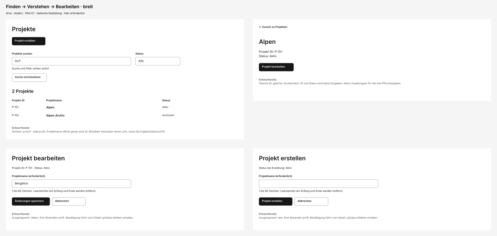
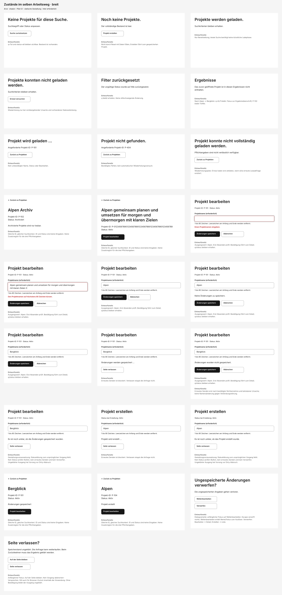

Finden → Verstehen → Bearbeiten. Vier zusammenhängende Vorlagen, als editierbare FIG und portables SVG.
Ressourcenstand 0.1.0 · shadcn · lokaler Pilot. Inter erforderlich; keine externen Schriften geladen. Keine interaktive Anwendung oder Laufzeitfreigabe.
Finden → Verstehen → Bearbeiten · breit
4 kopierbare Regionen. 1280 px pro Ansicht/Fragment; die Arbeitsfläche umfasst mehrere Ansichten.

Enthaltene Regionen
finden · 01 · Finden
detail · 02 · Verstehen
bearbeiten · 03 · Bearbeiten
erstellen · Abzweig · Erstellen
Zustände im selben Arbeitsweg · breit
25 kopierbare Regionen. 704 px pro Ansicht/Fragment; die Arbeitsfläche umfasst mehrere Ansichten.

Enthaltene Regionen
nulltreffer · Keine Projekte für diese Suche.
erstleere · Noch keine Projekte.
liste-laden · Projekte werden geladen.
liste-fehler · Projekte konnten nicht geladen werden.
filter-ungueltig · Filter zurückgesetzt
rueckkehr · Ergebnisse
detail-laden · Projekt wird geladen …
detail-fehlt · Projekt nicht gefunden.
detail-fehler · Projekt konnte nicht vollständig geladen werden.